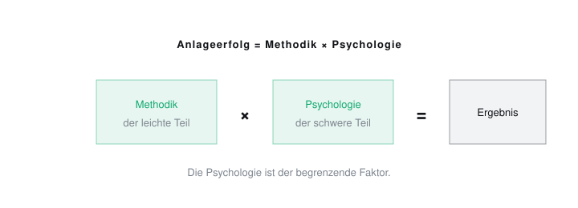
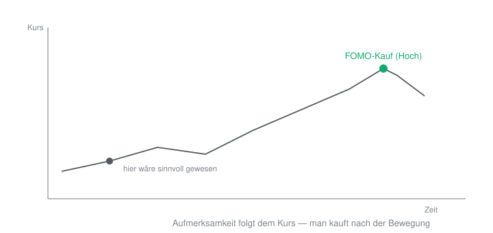
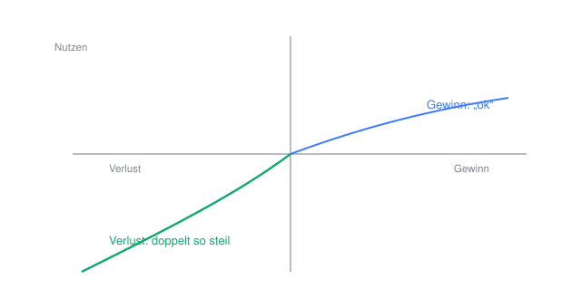
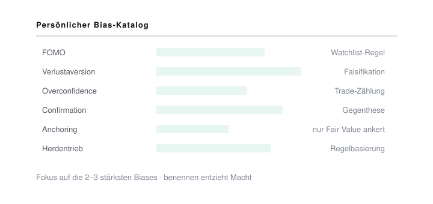

Warum Psychologie im Kurs den Ausschlag gibt
Du hast jetzt sechs Module Methodik gelernt: bewerten, timen, dimensionieren, ein- und aussteigen. Und hier ist die unbequeme Wahrheit, die jeder erfahrene Anleger bestätigt: Die Methodik ist der leichte Teil. Ein durchschnittlich intelligenter Mensch kann die Inhalte der Module 1–6 in wenigen Monaten verstehen.
Was Jahre — manchmal Jahrzehnte — dauert, ist etwas anderes: die Methodik auch dann anzuwenden, wenn es wehtut. Wenn der Kurs fällt und jede Faser deines Körpers verkaufen will. Wenn alle euphorisch sind und du dich ausgeschlossen fühlst. Wenn du dich geirrt hast und der Stolz einen sauberen Ausstieg verhindert.
Der berühmte Satz von Benjamin Graham bringt es auf den Punkt: „Das Hauptproblem des Anlegers — und sogar sein schlimmster Feind — ist wahrscheinlich er selbst." Die gesamte Behavior-Gap-Forschung aus Modul 1 ist die statistische Bestätigung dieses Satzes. Anleger unterperformen ihre eigenen Fonds — nicht wegen schlechter Auswahl, sondern wegen schlechten Verhaltens.

Deshalb ist dieses Modul das längste im Kurs. Es macht aus einem Menschen, der weiß, was zu tun ist, einen Menschen, der es auch tut.
Lernziele
Nach diesem Modul kannst du:
- die Herkunft deiner Denkfehler verstehen — warum ein Gehirn, das für die Savanne optimiert ist, am Aktienmarkt systematisch versagt;
- die sieben Verzerrungen dieses Moduls (FOMO, Verlustaversion, Overconfidence, Confirmation Bias, Anchoring, Recency Bias, Herdentrieb) in dir selbst erkennen und gegensteuern;
- den Unterschied zwischen Disziplin und Geduld verstehen und beides trainieren;
- Routinen etablieren, die gute Entscheidungen erzwingen und Emotionen aus dem Moment nehmen;
- ein Trading-Journal führen, das Prozess und Ergebnis trennt;
- mit Fehlern umgehen, ohne in Lähmung oder Rache zu verfallen;
- deinen persönlichen Bias-Katalog erstellen und in konkrete Gegenmaßnahmen übersetzen.
7.1Warum dein Gehirn am Aktienmarkt versagt
Bevor wir die einzelnen Verzerrungen behandeln, lohnt der Blick auf ihre gemeinsame Wurzel. Denn diese Fehler sind keine Dummheit — sie sind Merkmale, keine Bugs. Sie waren über Jahrhunderttausende überlebensnützlich und versagen nur in der sehr speziellen, evolutionär brandneuen Umgebung „Finanzmarkt".
| In der Savanne nützlich … | … am Aktienmarkt ruinös |
|---|---|
| Der Herde folgen (Sicherheit) | Herdentrieb (kaufen im Hoch) |
| Verlust vermeiden (Hunger droht) | Verlustaversion (Verlierer halten) |
| Muster erkennen (Raubtier!) | Muster im Zufall sehen (Charts) |
| Auf Jüngstes reagieren (Gefahr) | Recency Bias (Trend fortschreiben) |
| Schnell entscheiden (überleben) | Overtrading, Aktionismus |
Zwei Denksysteme (nach Kahneman) sind hier im Konflikt:
| System 1 | System 2 |
|---|---|
| schnell, automatisch, emotional | langsam, bewusst, rational |
| „Der Kurs fällt — VERKAUFEN!" | „Ist meine These noch intakt?" |
| in der Savanne lebensrettend | am Markt notwendig |
| dominiert unter Stress | wird unter Stress ausgeschaltet |
Das grausame Detail: Genau wenn es am meisten auf System 2 ankäme — in Panik oder Euphorie —, übernimmt System 1. Deshalb funktioniert die Lösung nicht über „mehr Willenskraft im Moment", sondern über Regeln und Routinen, die im Voraus (in Ruhe, mit System 2) festgelegt und im Moment nur noch ausgeführt werden. Der gesamte Kurs ist so aufgebaut: Einstiegsplan, Falsifikationskriterium, Verkaufsregeln — alles Werkzeuge, die die Entscheidung aus dem emotionalen Moment herausziehen.
Merksatz 1Du kannst deine Emotionen im Moment der Entscheidung nicht besiegen. Also triff die Entscheidung nicht im Moment — triff sie vorher, schriftlich, und führe sie später nur aus.
7.2FOMO — Fear of Missing Out
Was passiert
FOMO ist die Angst, eine Gelegenheit zu verpassen, während andere profitieren. Sie ist die Emotion, die dich eine Aktie kaufen lässt, nachdem sie bereits stark gestiegen ist — genau zum schlechtesten Zeitpunkt.

FOMO ist die direkte Ursache des Befunds aus Modul 1: Privatanleger kaufen aufmerksamkeitsgetrieben, nach der Bewegung. Der Hype-Zyklus (Meme-Aktien, jede neue Technologie-Euphorie) lebt von FOMO.
Woran du es bei dir erkennst
- Du willst eine Aktie kaufen, die du gestern noch nicht kanntest.
- Der Auslöser ist eine Nachricht, ein Chart, ein Freund — nicht deine eigene Analyse.
- Du spürst Dringlichkeit: „jetzt, sofort, sonst ist der Zug weg".
- Du überspringst deine Checkliste, „weil keine Zeit".
Gegenmaßnahmen
- Die Watchlist-Regel (Modul 4): Du kaufst nur, was vorher auf deiner Watchlist stand, mit vorher definierter Kaufschwelle. Was du erst heute entdeckst, kaufst du frühestens nach vollständiger Analyse — also nie im FOMO-Moment.
- Der Zug-Gedanke: Es fährt immer ein nächster Zug. Am Aktienmarkt kommen die Gelegenheiten in Serie; kein verpasster Trade ist der letzte. Der einzige „Zug", den du nicht verpassen darfst, ist der, in den du schon eingestiegen bist (deine Gewinner laufen lassen, Modul 6).
- Die 24-Stunden-Regel: Bei jedem spontanen Kaufimpuls ohne vorherige Analyse: 24 Stunden warten. Verschwindet die Dringlichkeit, war es FOMO. Bleibt das echte Interesse, analysiere es ordentlich.
Merksatz 2Die teuersten Aktien sind die, die man kauft, weil man Angst hat, sie zu verpassen. Es fährt immer ein nächster Zug — und der, den du gerade verpasst zu haben glaubst, war meist gar keiner.
7.3Verlustaversion und der Dispositionseffekt
Der wirkmächtigste Bias
Die Forschung von Kahneman und Tversky zeigt: Ein Verlust schmerzt etwa doppelt so stark, wie ein gleich großer Gewinn erfreut. Diese Asymmetrie — Verlustaversion — ist einer der wirkmächtigsten Verhaltensfaktoren am Markt.

Die Folge: der Dispositionseffekt
Weil Verluste so wehtun, tut der Mensch alles, um sie nicht realisieren zu müssen (denn ein Buchverlust fühlt sich weniger real an als ein realisierter). Das führt zum Dispositionseffekt aus Modul 1:
| Gewinner-Position (eine Aktie im Plus) | Verlierer-Position (eine Aktie im Minus) | |
|---|---|---|
| Gedanke | „Schnell verkaufen, bevor der Gewinn wieder weg ist!" | „Ich verkaufe erst, wenn ich wieder bei plus-minus-null bin." |
| Antrieb | das gute Gefühl sichern, die Angst vor dem Verschwinden loswerden | den Schmerz eines realisierten Verlusts vermeiden — ein Buchverlust fühlt sich weniger real an |
| Ergebnis | verkauft zu früh — schneidet genau die Gewinner ab, die groß werden könnten | hält zu lange — klammert sich an eine womöglich gebrochene These |
| Richtig wäre (Modul 6) |
Gewinner laufen lassen, solange der Wert mitwächst | eine gebrochene These schnell verkaufen |
Der Kern: Beide Male steuert nicht die Frage „ist das eine gute Entscheidung?", sondern „wie vermeide ich Schmerz?" — und das führt zur exakten Umkehrung des Richtigen (Modul 6): Gewinner werden gekappt, Verlierer gehalten. Verlustaversion erzwingt das falsche Verhalten, wenn man ihr nicht mit Regeln begegnet.
Der Sunk-Cost-Fehler
Verwandt und ebenso teuer: Der Sunk-Cost-Fehler lässt dich an einer Position festhalten, weil du schon viel investiert (oder verloren) hast. „Ich habe schon so lange durchgehalten, jetzt verkaufe ich erst recht nicht." Das bereits verlorene Geld ist aber weg — es ist für die Zukunftsentscheidung irrelevant. Die einzige Frage bleibt: Würde ich heute neu kaufen? (Modul 6).
Gegenmaßnahmen
- Das Falsifikationskriterium (Modul 1) nimmt die Verlustrealisierung aus der Emotion: Du verkaufst, weil eine vorher definierte Regel es sagt, nicht weil du im Moment den Schmerz erträgst.
- Den Einstandskurs verbergen: Manche Anleger blenden den Einstandskurs in ihrer Depot-Ansicht bewusst aus, um das Anchoring an „Plus-Minus-Null" zu durchbrechen.
- Verluste umdeuten: Ein regelkonformer Verlust ist kein Fehler — er ist die Kosten des Geschäfts (Erwartungswert, Modul 1). Von vier Trades dürfen drei verlieren, wenn das CRV stimmt. Ein Verlust nach Plan ist ein erfolgreich ausgeführter Trade.
Merksatz 3Der Schmerz eines Verlusts verleitet dich, ihn nicht zu realisieren — und macht ihn dadurch größer. Ein geplanter Verlust ist kein Versagen, sondern eine bezahlte Prämie für die Chance auf den großen Gewinn.
7.4Overconfidence — Selbstüberschätzung
Was passiert
Die meisten Menschen halten sich für überdurchschnittliche Autofahrer — was statistisch unmöglich ist. Am Aktienmarkt ist dieser Effekt besonders teuer, weil er direkt in Overtrading und zu große Positionen übersetzt.
Wenige gute Trades → „Ich hab's drauf!" → häufiger handeln,
größere Positionen,
Checkliste überspringen
│
▼
Ein großer Verlust → Rückkehr zur Demut
(teuer erkauft)
Ein besonders gefährlicher Auslöser ist das „Glück"-Feld aus der Prozess-Ergebnis-Matrix (Modul 1): Ein schlechter Prozess wird durch ein gutes Ergebnis belohnt, der Anleger schreibt den Erfolg seinem Können zu (statt dem Zufall) und erhöht den Einsatz. Der Markt korrigiert diese Illusion irgendwann — meist zum teuersten Zeitpunkt.
Der Beleg aus Modul 1
Erinnere dich: Männer handeln häufiger als Frauen und schneiden deshalb schlechter ab — nicht wegen schlechterer Auswahl, sondern wegen mehr Aktivität. Overconfidence ist der psychologische Motor dieses Overtradings.
Gegenmaßnahmen
- Das Trading-Journal (7.9): Es trennt Können von Glück. Wer seine Thesen vorher aufschreibt und nachher überprüft, entlarvt gnadenlos, wie viele Erfolge tatsächlich Prozess und wie viele Zufall waren.
- Die Trade-Zählung: Führe Buch über die Anzahl deiner Trades. Steigt sie ohne Grund, ist Overconfidence am Werk (Modul 1: Kosten skalieren mit Aktivität, nicht mit Qualität).
- Positionsgrößen-Disziplin (Modul 5): Die 1-%-Regel begrenzt den Schaden, den Overconfidence anrichten kann. Sie ist der Airbag gegen die eigene Selbstüberschätzung.
- Kalibrierung üben: Schreibe zu jeder Prognose eine Wahrscheinlichkeit („70 % sicher"). Nach 20 Trades siehst du, ob deine „70 %" wirklich 70 % waren — meist sind sie es nicht.
Merksatz 4Der Markt ist eine Maschine, die Selbstüberschätzung in Demut umwandelt — und dir die Rechnung dafür schickt. Miss dein Können am Prozess, nie am letzten Ergebnis.
7.5Confirmation Bias — der Bestätigungsfehler
Was passiert
Sobald du eine Aktie besitzt (oder besitzen willst), sucht dein Gehirn selektiv nach Informationen, die deine These bestätigen, und blendet aus, was ihr widerspricht. Du liest die positiven Analysen aufmerksam, überfliegst die negativen. Du findest die bärischen Argumente „nicht überzeugend" — nicht, weil sie schwach sind, sondern weil sie dir unangenehm sind.
These: „Aktie X ist ein Kauf"
│
├─ Positive Nachricht → „Sehe ich, wusste ich!" (aufgenommen)
│
└─ Negative Nachricht → „Übertrieben / kennt sich nicht aus" (verworfen)
→ Die These wird immunisiert gegen Widerlegung.
Der Confirmation Bias ist besonders tückisch, weil er sich wie sorgfältige Recherche anfühlt. Man liest viel — aber nur eine Seite.
Der Bezug zu Modul 4
Erinnere dich an die „eiserne Reihenfolge": Wer beim Chart beginnt und dann Fundamentaldaten „dazu sucht", betreibt Confirmation Bias in Reinform. Deshalb Fundament zuerst, mit vorher festgelegten Annahmen.
Gegenmaßnahmen
- Die Gegenthese erzwingen: Bevor du kaufst, schreibe die beste bärische Analyse auf, die du finden kannst — als wärst du ein Leerverkäufer, der gegen die Aktie wettet. Wenn du die Gegenseite nicht überzeugend darstellen kannst, verstehst du die Aktie nicht gut genug.
- Das Falsifikationskriterium (Modul 1): Es ist die institutionalisierte Gegenthese. Indem du vorher festlegst, was dich widerlegen würde, zwingst du dich, widersprechende Information ernst zu nehmen — sie ist dann nicht mehr „Störung", sondern „Signal".
- Aktiv nach Widerspruch suchen: Lies gezielt die bärischen Foren, die Short-Reports, die kritischen Analysen. Nicht um dich zu verunsichern, sondern um deine These echten Tests auszusetzen.
- KI-Hinweise auf mögliche Denkfehler (Trade Journal): Ein Werkzeug, das gezielt die Gegenperspektive einspielt, kann den Bestätigungsfehler durchbrechen — vorausgesetzt, du behältst die interpretative Kontrolle (die KI liefert Gegenargumente, du entscheidest).
Merksatz 5Verliebe dich nie in eine Aktie — verliebe dich in die Frage, ob du dich irrst. Die beste Analyse ist die, die am härtesten versucht, die eigene These zu zerstören.
7.6Anchoring — der Ankereffekt
Was passiert
Das Gehirn klammert sich an die erste Zahl, die es sieht, und bewertet alles Weitere relativ dazu. Am Aktienmarkt ist der wirkmächtigste Anker der Einstandskurs (Modul 6) — aber es gibt weitere.
| Anker | Fehlerhafter Gedanke | Warum falsch |
|---|---|---|
| Einstandskurs | „Bei 100 gekauft, bei 100 verkaufe ich" | Die Aktie kennt deinen Einstand nicht |
| Alter Höchstkurs | „War mal 200, jetzt 120 — billig!" | Der alte Kurs kann falsch bewertet gewesen sein |
| Runde Zahlen | „Warte, bis sie 100 erreicht" | Willkürliche psychologische Marke |
| Kaufkurs anderer | „Analyst sah 250 als Ziel" | Fremder Anker ohne eigene Analyse |
| 52-Wochen-Hoch/Tief | „Nahe am Tief = günstig" | Sagt nichts über den fairen Wert |
Der teuerste Anker: der alte Höchstkurs
„Diese Aktie stand mal bei 200 €, jetzt bei 120 € — ein Schnäppchen!" ist einer der verlustreichsten Gedanken überhaupt. Er verwechselt einen historischen Kurs mit dem fairen Wert. Vielleicht waren die 200 € eine Blase; vielleicht ist das Unternehmen heute strukturell beschädigt (Value-Falle, Modul 2). Der alte Höchstkurs ist als Bewertungsmaßstab wertlos — nur der aktuelle faire Wert zählt.
Gegenmaßnahmen
- Nur der faire Wert ankert (Modul 2): Ersetze jeden psychologischen Anker durch den berechneten fairen Wert. Er ist der einzige legitime Bezugspunkt.
- Der Heute-neu-kaufen-Test (Modul 6): „Würde ich diese Aktie heute, zum heutigen Kurs, neu kaufen?" — diese Frage enthält keinen Anker.
- Zahlen bewusst umkehren: Wenn du „nahe am 52-Wochen-Tief, also billig" denkst, frage aktiv: „Warum ist sie gefallen? Ist die These noch intakt?" — und lass die Fundamentaldaten antworten, nicht den Chart.
Merksatz 6Der einzige legitime Anker ist der berechnete faire Wert. Jeder andere — dein Einstand, das alte Hoch, die runde Zahl — ist eine Zahl, die die Aktie nicht kennt und die dir nur schadet.
7.7Recency Bias und Herdentrieb
Recency Bias — die Überbewertung des Jüngsten
Das Gehirn gewichtet die jüngste Erfahrung übermäßig stark. Nach drei guten Jahren erscheint der Aufschwung ewig, nach einem Crash erscheint die Erholung unmöglich. Recency Bias ist der Grund, warum Anleger prozyklisch handeln: Sie schreiben den aktuellen Trend in die Zukunft fort — und werden an Wendepunkten regelmäßig auf dem falschen Fuß erwischt.
Nach langem Bullenmarkt: „Es geht immer weiter hoch" → Kauf im Hoch
Nach tiefem Crash: „Es kommt nie zurück" → Verkauf im Tief
→ Recency Bias erzeugt exakt das „hoch kaufen, tief verkaufen"
des Behavior Gap (Modul 1).
Herdentrieb — die Sicherheit der Menge
Der Mensch fühlt sich in der Herde sicher — evolutionär sinnvoll, am Markt ruinös. Wenn „alle" kaufen, ist es meist zu spät; wenn „alle" verkaufen, entstehen die besten Gelegenheiten. Der Herdentrieb ist der Motor von Blasen (jeder kauft, weil jeder kauft) und Crashs (jeder verkauft, weil jeder verkauft).
Die berühmte Formulierung — „Sei ängstlich, wenn andere gierig sind, und gierig, wenn andere ängstlich sind" — ist leicht zu zitieren und extrem schwer zu leben, weil sie verlangt, gegen den stärksten sozialen Instinkt zu handeln.
Gegenmaßnahmen
- Regelbasierung schlägt Stimmung: Wenn dein Kauf durch eine vorher definierte Kaufschwelle (Watchlist, Modul 4) ausgelöst wird, kaufst du automatisch, wenn die Herde verkauft (dann fallen die Kurse in deine Kaufzone) — und du kaufst nicht im Hype (da liegen die Kurse über der Schwelle).
- Marktpanik als Kalender-Chance begreifen: Crashs sind die Zeiten, in denen der antizyklische Anleger seine Watchlist abarbeitet. Wer das vorher verinnerlicht hat, empfindet einen Crash als Gelegenheit, nicht nur als Bedrohung.
- Medien-Diät: Die Nachrichtenlage ist am Hoch euphorisch und am Tief apokalyptisch — sie verstärkt Recency Bias und Herdentrieb. Weniger Marktkommentar zu konsumieren ist eine legitime Risikomaßnahme.
Merksatz 7Die Herde hat am Hoch die beste Laune und am Tief die schlechteste — und liegt an beiden Wendepunkten falsch. Deine Regeln sind der Ausweg aus der Herde: Sie kaufen, wenn es sich falsch anfühlt.
7.8Disziplin, Geduld und Routinen
Die bisher behandelten Verzerrungen bekämpft man nicht mit Willenskraft im Moment, sondern mit drei strukturellen Eigenschaften, die man trainieren kann.
Disziplin ≠ Geduld
| Disziplin | Geduld | |
|---|---|---|
| Definition | Den Regeln folgen, auch wenn es wehtut | Warten können, ohne zu handeln |
| Prüfung | Verkaufst du bei Thesenbruch, obwohl es schmerzt? | Lässt du Cash liegen, bis der Preis kommt? |
| Gegner | der Impuls zu handeln | der Impuls, „endlich etwas zu tun" |
| Trainiert durch | Regeln und Journal | Watchlist und Zeithorizont |
Beide sind nötig. Disziplin ohne Geduld führt zu diszipliniertem Overtrading. Geduld ohne Disziplin führt zu passivem Aussitzen gebrochener Thesen. Der erfolgreiche Anleger hat beides: Er wartet geduldig auf den richtigen Preis (Geduld) und folgt dann konsequent seinem Plan (Disziplin).
Warum Routinen mächtiger sind als Motivation
Motivation ist unzuverlässig — sie schwankt mit Stimmung, Schlaf und Marktlage. Routinen sind zuverlässig, weil sie keine Entscheidung im Moment erfordern. Eine gute Routine nimmt die Emotion aus dem Prozess, indem sie festlegt, was wann getan wird — unabhängig davon, wie du dich gerade fühlst.
Konkrete Routinen für den langfristigen Anleger
TÄGLICH (5–10 Min, optional): • KEIN Blick auf Depotstände nötig (langfristiger Anleger!) • Höchstens: relevante Unternehmensnachrichten der Watchlist überfliegen WÖCHENTLICH (30–60 Min): • Watchlist durchgehen: Ist ein Titel in die Kaufzone gefallen? • Neue Ideen sammeln (noch nicht kaufen — erst analysieren) BEI QUARTALSZAHLEN je Position (60–90 Min): • Fundamentaldaten prüfen (Modul 2): Bruttomarge, ROIC, Cashflow • Falsifikationskriterien abgleichen: noch intakt? • These aktualisieren, fairen Wert neu berechnen BEI JEDEM TRADE: • Einstiegsplan/Verkaufsregel ausfüllen (Modul 4/6) • Journal-Eintrag VOR der Ausführung (7.9) JÄHRLICH: • Rebalancing-Check (Modul 6) • Journal-Rückblick: Welche Fehler wiederholen sich? (7.9) • Regelwerk überprüfen und verfeinern (Modul 8)
Die Kern-Routine ist eine Unterlassung: Der langfristige Anleger schaut nicht täglich auf seine Kurse. Häufiges Draufschauen aktiviert Verlustaversion (jeder rote Tag schmerzt) und Handlungsdrang (Modul 1: Overtrading). Wer sein Depot seltener ansieht, trifft nachweislich bessere Entscheidungen.
Merksatz 8Verlasse dich nicht auf Motivation, die kommt und geht — verlasse dich auf Routinen, die bleiben. Und die beste Routine des langfristigen Anlegers ist, seltener hinzusehen.
7.9Das Trading-Journal — Prozess und Ergebnis trennen
Warum das Journal alles verändert
Das Trading-Journal ist keine Buchhaltung und kein Tagebuch. Es ist das einzige Instrument, das Prozess und Ergebnis trennen kann (Modul 1) — und damit das einzige, das echtes Lernen ermöglicht.
Ohne Journal bewertest du deine Entscheidungen im Nachhinein am Ergebnis: Trade gewonnen = „war gut", verloren = „war schlecht". Das ist der Trugschluss aus der Prozess-Ergebnis-Matrix. Ein gewonnener Glückstrade verstärkt einen schlechten Prozess; ein verlorener Pech-Trade lässt dich einen guten Prozess aufgeben. Nur das Journal, das die These vor dem Ergebnis festhält, macht diese Verwechslung unmöglich.
| OHNE Journal | MIT Journal | |
|---|---|---|
| Ablauf | Ergebnis → Bewertung | These (vorher) → Ergebnis → Prozess-Bewertung |
| Leitfrage | „Gewonnen = gut" | „War die Entscheidung gut, unabhängig vom Ergebnis?" |
| Effekt | lernt das Falsche | lernt das Richtige |
Was in einen Journal-Eintrag gehört
Der Eintrag entsteht in zwei Phasen — die Trennung ist entscheidend:
═══════ PHASE 1: VOR dem Trade (die These festhalten) ═══════ Datum: __________ Unternehmen: __________ Warum kaufe ich? (These) __________ Fairer Wert / Kaufzone: __________ CRV: __________ Positionsgröße + Begründung: __________ Falsifikationskriterien: 1) ____ 2) ____ 3) ____ Emotionaler Zustand: ruhig / gierig / ängstlich / gedrängt? Wie sicher bin ich? (in %) __________ ═══════ PHASE 2: NACH dem Abschluss (das Ergebnis prüfen) ═══════ Verkaufsdatum + Grund: __________ (Kategorie A oder B, Modul 6) Ergebnis in %: __________ War der PROZESS gut? ja / nein ← die eigentliche Frage Prozess-Ergebnis-Feld: verdient / Glück / Pech / Strafe (Modul 1) Was würde ich wieder so machen? __________ Welchen Bias habe ich bemerkt? __________ Lektion: __________
Wichtig ist: Phase 1 muss vor der Ausführung geschrieben werden. Denn nur eine schriftlich fixierte, mit Zeitstempel versehene These lässt sich später nicht nachträglich schönreden (Hindsight Bias: „Das habe ich doch kommen sehen").
Der emotionale Zustand ist kein Beiwerk
Die Zeile „emotionaler Zustand" ist eine der wertvollsten. Nach 20–30 Trades erkennst du Muster: „Meine Verlusttrades entstehen fast alle, wenn ich mich gedrängt oder euphorisch gefühlt habe." Das ist eine Erkenntnis, die dir kein Kursbuch geben kann — nur dein eigenes Journal.
Der Journal-Rückblick
Einmal im Quartal oder Jahr liest du das Journal als Ganzes. Du suchst nicht nach Gewinnen und Verlusten, sondern nach wiederkehrenden Mustern:
- Welcher Bias taucht am häufigsten auf?
- In welchem emotionalen Zustand mache ich die meisten Fehler?
- Welche Art von These geht überproportional oft auf — welche selten?
- Handle ich zu viel? (Trade-Zählung, Modul 1)
Das Ergebnis dieses Rückblicks fließt direkt in die Verfeinerung deines Regelwerks (Modul 8). So wird das Journal zur Maschine der kontinuierlichen Verbesserung.
Merksatz 9Das Journal ist der einzige ehrliche Spiegel, den ein Anleger hat. Es hält deine These fest, bevor das Ergebnis sie verfälschen kann — und verwandelt Erfahrung in Lernen statt in Selbsttäuschung.
7.10Der Umgang mit Fehlern
Fehler sind unvermeidlich — und notwendig
Der Erwartungswert (Modul 1) sagt es unmissverständlich: Du wirst dich regelmäßig irren, und das ist eingepreist. Bei einem CRV von 3:1 darfst du in drei von vier Fällen falsch liegen. Ein Verlust ist im richtigen System kein Fehler — er ist erwartet.
Die entscheidende Unterscheidung:
| Prozessfehler | Ergebnisverlust | |
|---|---|---|
| Was ist es? | Du hast gegen deine Regeln verstoßen | Du hast dich an die Regeln gehalten, es lief trotzdem schlecht |
| Beispiel | Ohne Analyse aus FOMO gekauft | Regelkonform gekauft, unvorhersehbares Ereignis |
| Bewertung | echter Fehler — daraus lernen | kein Fehler — Kosten des Geschäfts |
| Reaktion | Regel verschärfen, Ursache verstehen | akzeptieren, weitermachen |
Der häufigste psychologische Fehler ist, beide zu verwechseln: sich für einen regelkonformen Verlust zu geißeln (führt zu Lähmung) oder einen echten Prozessfehler als „Pech" abzutun (führt zur Wiederholung).
Die zwei destruktiven Reaktionen
1. Revenge Trading (Rachehandel). Nach einem Verlust will man ihn sofort „zurückholen" — mit einem größeren, unüberlegten Trade. Das ist die gefährlichste Reaktion überhaupt, weil sie Verlustaversion, Overconfidence und Overtrading zugleich aktiviert. Aus einem geplanten kleinen Verlust wird ein ungeplanter großer.
2. Lähmung (Analysis Paralysis). Nach einem Verlust traut man sich gar nicht mehr, zu handeln — auch nicht bei einer exzellenten, regelkonformen Gelegenheit. Der Schmerz des letzten Verlusts (Recency Bias + Verlustaversion) blockiert die nächste gute Entscheidung.
Der konstruktive Umgang
Nach jedem Verlust:
1. Journal-Eintrag abschließen (Phase 2) — OHNE Selbstverurteilung
2. Prozessfehler oder Ergebnisverlust? (Tabelle oben)
3. Prozessfehler → Regel verschärfen, Ursache notieren
Ergebnisverlust → akzeptieren, nichts ändern
4. KEIN sofortiger neuer Trade zur „Wiedergutmachung"
5. Weitermachen nach Plan — der nächste Trade ist unabhängig vom letzten
Jeder Trade ist unabhängig
Ein hilfreiches mentales Modell: Der Markt hat kein Gedächtnis und schuldet dir nichts. Der nächste Trade weiß nicht, dass der letzte verloren hat. Es gibt keine „Glückssträhne" und keine „Pechsträhne" — es gibt nur eine lange Folge unabhängiger Entscheidungen, deren Qualität sich erst über viele Wiederholungen im Erwartungswert zeigt. Wer das verinnerlicht, ist immun gegen Rache und Lähmung gleichermaßen.
Merksatz 10Ein regelkonformer Verlust ist kein Fehler, sondern der Preis der Teilnahme. Der einzige echte Fehler ist, gegen die eigenen Regeln zu handeln — und der zweite, aus Angst vor dem letzten Verlust den nächsten guten Trade nicht zu machen.
7.11Dein persönlicher Bias-Katalog
Die Verzerrungen wirken bei jedem Menschen unterschiedlich stark. Der letzte Schritt dieses Moduls ist, deinen persönlichen Katalog zu erstellen — denn nur benannte Biases lassen sich bekämpfen.

Fülle die Spalte „Trifft mich" ehrlich aus (das Journal aus 7.9 liefert nach einigen Wochen die Daten). Konzentriere deine Gegenmaßnahmen auf die zwei bis drei stärksten Biases — der Versuch, alle gleichzeitig zu bekämpfen, überfordert und verpufft.
Merksatz 11Ein Bias, den du benennen kannst, hat schon die Hälfte seiner Macht verloren. Kenne deine zwei größten — und richte deine Regeln gezielt gegen sie.
Typische Anfängerfehler in Modul 7
| Fehler | Warum er teuer ist | Gegenmittel |
|---|---|---|
| Auf Willenskraft im Moment setzen | System 1 gewinnt unter Stress | Entscheidungen vorher schriftlich festlegen |
| Aus FOMO nach der Bewegung kaufen | Kauf am Hoch | Watchlist-Regel, 24h-Regel |
| Verlierer bis „Plus-Minus-Null" halten | Dispositionseffekt, Sunk Cost | Falsifikationskriterium, Heute-neu-kaufen-Test |
| Erfolge dem Können zuschreiben | Overconfidence → Overtrading | Journal trennt Können von Glück |
| Nur bestätigende Info lesen | Confirmation Bias fühlt sich wie Recherche an | Gegenthese erzwingen |
| Am alten Höchstkurs ankern | Verwechselt Historie mit Wert | Nur fairer Wert als Anker |
| Dem Trend/der Herde folgen | Recency Bias, kauft hoch/verkauft tief | Regelbasierte Kaufschwellen |
| Täglich aufs Depot schauen | Aktiviert Verlustaversion + Handlungsdrang | Seltener hinsehen, Routinen |
| Kein Journal führen | Kann Prozess nicht von Glück trennen | Journal in zwei Phasen (vorher/nachher) |
| Nach Verlust Rache-Trade | Größter Verlust folgt oft dem ersten | 24h-Regel, nächster Trade ist unabhängig |
| Regelkonformen Verlust als Versagen werten | Führt zu Lähmung | Prozessfehler ≠ Ergebnisverlust |
Checkliste — psychologische Selbstkontrolle
Vor jedem Trade:
- Stand dieser Titel vorher auf meiner Watchlist? (gegen FOMO)
- Habe ich die beste Gegenthese geschrieben? (gegen Confirmation Bias)
- Ankert meine Entscheidung am fairen Wert — nicht am Einstand/Hoch/runder Zahl? (gegen Anchoring)
- In welchem emotionalen Zustand bin ich gerade? (gedrängt/euphorisch = warten)
- Journal-Eintrag Phase 1 vor der Ausführung geschrieben?
Nach jedem Trade:
- Journal Phase 2 ausgefüllt — Prozess bewertet, nicht nur Ergebnis?
- War es ein Prozessfehler oder ein Ergebnisverlust?
- Kein Rache-Trade — der nächste Trade ist unabhängig vom letzten.
Regelmäßig:
- Journal-Rückblick: Welcher Bias wiederholt sich?
- Trade-Anzahl geprüft: handle ich zu viel? (gegen Overconfidence/Overtrading)
- Schaue ich zu oft aufs Depot?
- Bias-Katalog aktualisiert, Gegenmaßnahmen auf die 2–3 stärksten fokussiert.
Zusammenfassung
- Psychologie ist der begrenzende Faktor, nicht die Methodik. Die Module 1–6 sind der leichte Teil; sie auch unter Schmerz anzuwenden, ist der schwere.
- Die Verzerrungen sind evolutionäre Merkmale, die am Markt versagen. Unter Stress übernimmt das schnelle, emotionale System 1 — deshalb müssen Entscheidungen vorher mit System 2 festgelegt werden.
- FOMO lässt dich nach der Bewegung kaufen. Gegenmittel: Watchlist-Regel, „es fährt immer ein nächster Zug", 24h-Regel.
- Verlustaversion (Verluste schmerzen doppelt) erzwingt den Dispositionseffekt. Gegenmittel: Falsifikationskriterium, geplanter Verlust als bezahlte Prämie.
- Overconfidence treibt Overtrading und zu große Positionen. Gegenmittel: Journal, Trade-Zählung, 1-%-Regel.
- Confirmation Bias fühlt sich wie Recherche an. Gegenmittel: Gegenthese erzwingen, aktiv nach Widerspruch suchen.
- Anchoring: Der einzige legitime Anker ist der berechnete faire Wert — nicht Einstand, Hoch oder runde Zahl.
- Recency Bias und Herdentrieb erzeugen den Behavior Gap. Gegenmittel: Regelbasierung, Marktpanik als Chance, Medien-Diät.
- Disziplin (Regeln folgen) und Geduld (warten können) sind verschieden und beide nötig. Routinen schlagen Motivation. Die Kern-Routine: seltener hinsehen.
- Das Trading-Journal in zwei Phasen (These vorher, Prozess nachher) trennt Können von Glück und verwandelt Erfahrung in Lernen.
- Ein regelkonformer Verlust ist kein Fehler. Prozessfehler ≠ Ergebnisverlust. Die zwei destruktiven Reaktionen — Rache und Lähmung — vermeidet, wer weiß: Jeder Trade ist unabhängig.
Quiz
- Warum lassen sich Denkfehler am Markt nicht durch „mehr Willenskraft im Moment" beheben? Was ist die strukturelle Alternative?
- Ein Kollege kauft eine Aktie, die er gestern nicht kannte, „bevor der Zug abfährt". Welcher Bias, und welche zwei Gegenmaßnahmen greifen?
- Verluste schmerzen etwa doppelt so stark wie gleich große Gewinne erfreuen. Welches konkrete Fehlverhalten (aus Modul 1/6) erzwingt diese Asymmetrie?
- Was ist der Sunk-Cost-Fehler, und mit welcher einen Frage entkräftest du ihn?
- Warum ist der Erfolg aus dem „Glück"-Feld der Prozess-Ergebnis-Matrix psychologisch besonders gefährlich?
- Ein Anleger liest ausschließlich positive Analysen über seine Aktie und findet die kritischen „nicht überzeugend". Welcher Bias, und was ist die wirksamste Gegenmaßnahme?
- „Diese Aktie stand mal bei 200 €, jetzt 120 € — ein Schnäppchen." Welcher Bias steckt darin, und warum ist der Gedanke falsch?
- Erkläre den Unterschied zwischen Disziplin und Geduld an je einem Beispiel.
- Warum muss der Kern-Teil des Journal-Eintrags (die These) vor der Ausführung geschrieben werden?
- Unterscheide Prozessfehler und Ergebnisverlust. Welcher ist ein echter Fehler? Nenne die zwei destruktiven Reaktionen auf einen Verlust.
Lösungen anzeigen
- Weil unter Stress (Panik, Euphorie) das schnelle, emotionale System 1 die Kontrolle übernimmt und das langsame, rationale System 2 ausschaltet — genau dann, wenn man es am meisten bräuchte. Willenskraft im Moment kämpft also gegen ein System, das gerade nicht erreichbar ist. Die strukturelle Alternative: Entscheidungen vorab, in Ruhe, schriftlich treffen (Einstiegsplan, Falsifikationskriterium, Verkaufsregeln) und im Moment nur noch ausführen.
- FOMO (Fear of Missing Out). Gegenmaßnahmen (zwei genügen): (a) Watchlist-Regel — gekauft wird nur, was vorher analysiert auf der Watchlist stand, mit definierter Kaufschwelle; (b) 24-Stunden-Regel — bei spontanem Impuls 24 h warten; verschwindet die Dringlichkeit, war es FOMO. Zusätzlich: „Es fährt immer ein nächster Zug."
- Den Dispositionseffekt: Gewinner werden zu früh realisiert (um den Gewinn schmerzvermeidend zu „sichern"), Verlierer zu lange gehalten (um den Verlust nicht realisieren zu müssen). Das ist die exakte Umkehrung des Richtigen (Gewinner laufen lassen, gebrochene Thesen sofort verkaufen).
- Der Sunk-Cost-Fehler ist das Festhalten an einer Position, weil man schon viel investiert oder verloren hat („so lange durchgehalten, jetzt erst recht nicht verkaufen"). Er ist falsch, weil bereits verlorenes Geld weg und für die Zukunftsentscheidung irrelevant ist. Entkräftende Frage: „Würde ich diese Aktie heute, zum heutigen Kurs, neu kaufen?"
- Weil ein schlechter Prozess durch ein gutes Ergebnis belohnt wird. Der Anleger schreibt den Zufallserfolg seinem Können zu (Overconfidence), erhöht Einsatz und Frequenz — und wiederholt den schlechten Prozess so lange, bis der Markt die Illusion korrigiert, meist zum teuersten Zeitpunkt. Das gute Ergebnis verstärkt genau das falsche Verhalten.
- Confirmation Bias (Bestätigungsfehler). Wirksamste Gegenmaßnahme: die beste Gegenthese erzwingen — vor dem Kauf die überzeugendste bärische/Short-Analyse selbst aufschreiben. Wer die Gegenseite nicht darstellen kann, versteht die Aktie nicht gut genug. Institutionalisiert wird das durch das vorab definierte Falsifikationskriterium.
- Anchoring am alten Höchstkurs. Der Gedanke verwechselt einen historischen Kurs mit dem fairen Wert: Die 200 € könnten eine Blase gewesen sein, oder das Unternehmen ist heute strukturell beschädigt (Value-Falle). Der alte Kurs sagt nichts über den heutigen Wert — nur der aktuell berechnete faire Wert ist ein legitimer Bezugspunkt.
- Disziplin = den Regeln folgen, auch wenn es schmerzt — z. B. eine Position mit gebrochener These sofort verkaufen, obwohl man im Verlust ist. Geduld = warten können, ohne zu handeln — z. B. Cash liegen lassen und nicht kaufen, bis ein Titel die vorab definierte Kaufschwelle erreicht. Disziplin bekämpft den Handlungsimpuls beim Ausstieg, Geduld den Impuls, „endlich etwas zu tun".
- Um Hindsight Bias (Rückschaufehler) zu verhindern. Nur eine vor dem Ergebnis mit Zeitstempel fixierte These lässt sich hinterher nicht schönreden („das habe ich doch kommen sehen"). Das ermöglicht die ehrliche Trennung von Prozess und Ergebnis (Modul 1): Man kann bewerten, ob die Entscheidung gut war, unabhängig davon, wie sie ausging.
- Prozessfehler = Verstoß gegen die eigenen Regeln (z. B. aus FOMO ohne Analyse gekauft) → echter Fehler, daraus lernen, Regel verschärfen. Ergebnisverlust = regelkonform gehandelt, trotzdem schlecht gelaufen (unvorhersehbares Ereignis) → kein Fehler, sondern Kosten des Geschäfts (Erwartungswert). Echter Fehler ist nur der Prozessfehler. Die zwei destruktiven Reaktionen: Revenge Trading (den Verlust mit einem größeren, unüberlegten Trade „zurückholen") und Lähmung/Analysis Paralysis (aus Angst vor dem letzten Verlust den nächsten guten Trade nicht machen).
Praktische Übungen
Übung 1 — Dein Bias-Katalog (45 Min.)
Fülle den persönlichen Bias-Katalog aus 7.11 aus. Bewerte jeden der sieben Biases ehrlich auf einer Skala von 1–10, wie stark er dich trifft. Wähle die zwei stärksten aus und formuliere für jeden eine konkrete, überprüfbare Gegenmaßnahme.
Übung 2 — Das Journal aufsetzen (30 Min.)
Erstelle dir eine Journal-Vorlage mit den zwei Phasen (vorher/nachher) aus 7.9. Egal ob Tabelle, Notiz-App oder Papier — Hauptsache, du kannst die These vor der Ausführung eintragen. Fülle Phase 1 für deinen nächsten geplanten (oder einen hypothetischen) Trade aus.
Übung 3 — Die Gegenthese schreiben (60 Min.)
Wähle eine Aktie, von der du überzeugt bist. Schreibe die beste bärische Analyse, die du finden kannst — als wärst du ein Leerverkäufer. Suche gezielt kritische Quellen. Frage dich danach ehrlich: Hat es deine These geschwächt? Falls nicht: Hast du wirklich hart gesucht?
Übung 4 — Der emotionale Rückblick (45 Min.)
Falls du bereits gehandelt hast: Gehe deine letzten 10 Trades durch und notiere zu jedem deinen (erinnerten) emotionalen Zustand beim Kauf. Gibt es ein Muster zwischen Emotion und Ergebnis? Falls du noch nicht gehandelt hast: Erinnere dich an eine frühere Finanzentscheidung (auch außerhalb von Aktien) und analysiere, welcher Bias sie beeinflusst hat.
Übung 5 — Deine Routinen definieren (30 Min.)
Erstelle nach dem Muster aus 7.8 deinen persönlichen Routine-Plan (täglich/wöchentlich/quartalsweise/jährlich). Sei realistisch — lieber wenige Routinen, die du einhältst, als viele, die du ignorierst. Lege insbesondere fest: Wie oft schaust du bewusst auf dein Depot?
Übung 6 — Der Fehler-Test (30 Min.)
Denke an einen vergangenen Verlust (Aktien oder anderes). War es ein Prozessfehler oder ein Ergebnisverlust? Wie hast du damals reagiert — konstruktiv, mit Rache oder mit Lähmung? Formuliere für die Zukunft deine schriftliche „Nach-Verlust-Routine" aus 7.10.